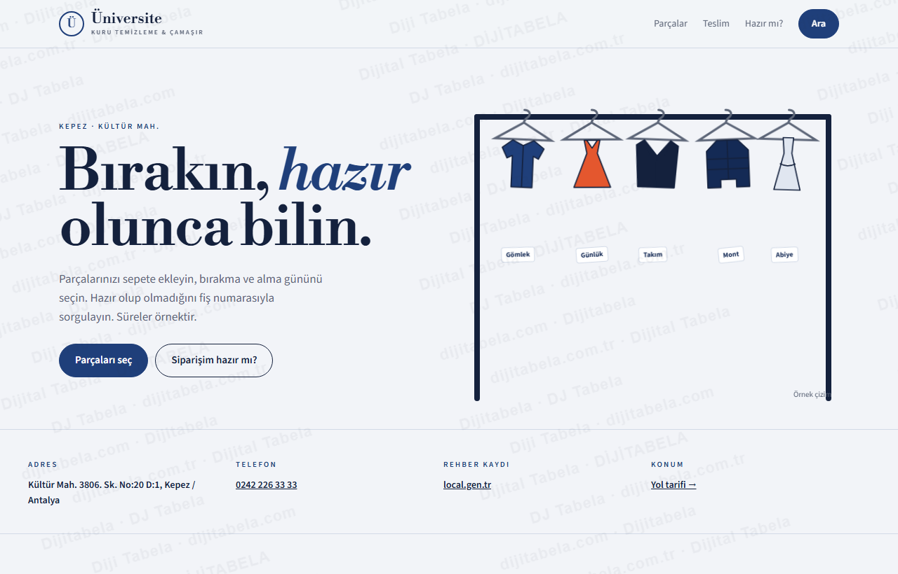
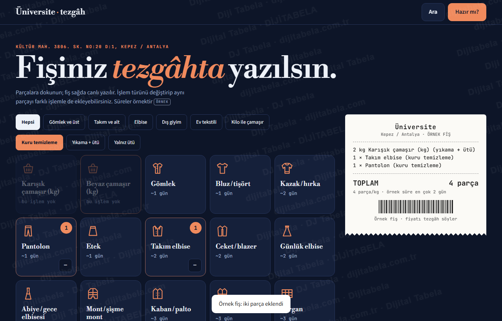
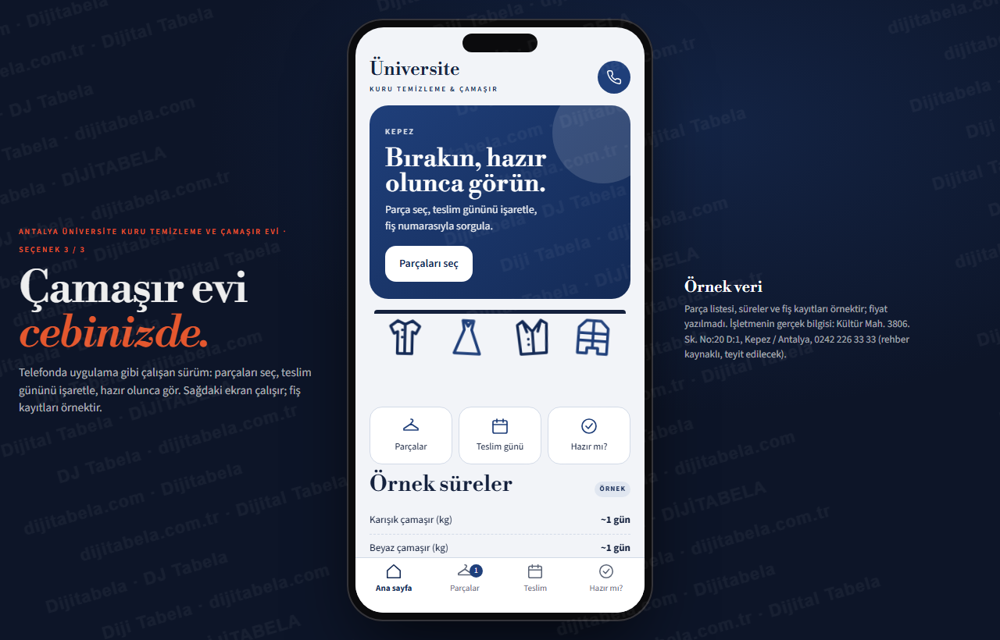

Parçaları sepete ekleyin, bırakma-alma gününü seçin, siparişin hazır olup olmadığını sorgulayın · 3 tasarım
Antalya Üniversite Kuru Temizleme ve Çamaşır Evi’nın herkese açık kaydını inceledik: işletme local.gen.tr rehberinde telefonu ve adresiyle görünüyor (Kültür Mah. 3806. Sk. No:20 D:1, Kepez / Antalya). Rehberdeki ücretsiz site adresi (business.site) 13 Eki’de 404 veriyor; çalışmıyor. Müşterinin parçalarını sepete ekleyip bırakma-alma gününü seçebildiği, hazır mesaj üretebildiği ve siparişinin hazır olup olmadığını sorgulayabildiği bir sayfa hazırladık. Üç tasarım da çalışır durumda. Listeler, süreler ve kayıtlar örnektir; bu turda fiyat yazılmadı; işletmenin gerçek bilgisi değildir ve hiçbir mesaj otomatik gönderilmez.

Aydınlık; askıdaki kıyafet çizimleri, kategorili parça sepeti, teslim planı ve hazır mı sorgusu.
Vitrin yerleşimi: kategori, adet sayacı, fiş özetiCanlı aç →
Koyu tezgâh: büyük parça kutuları, canlı yazılan fiş, teslim planı ve fiş sorgusu.
Tezgâh yerleşimi: parça ızgarası, kâğıt fişCanlı aç →
Telefon çerçevesinde uygulama gibi: ana sayfa, parçalar, teslim, hazır mı.
Uygulama yerleşimi: alt menü, sekmeli ekranlarCanlı aç →- Parça sepeti: gömlek, takım, mont, yorgan… adet sayacıyla eklenir; işlem türü (kuru temizleme, yıkama-ütü, yalnız ütü) seçilir; fiş özeti anında oluşur
- Teslim planı: bırakma şekli, bırakma günü ve zaman tercihi seçilir; parçaların örnek işlem süresine göre en erken alma günü hesaplanır
- Hazır mesaj: parça listesi, günler ve notla mesaj üretilir; müşteri kendisi gönderir
- Siparişim hazır mı: fiş numarasıyla parça parça durum (alındı, işlemde, ütüde, hazır) görünür (örnek kayıt)
Kaynakta yalnız şunlar görüldü: işletme adı, adres (Kültür Mah. 3806. Sk. No:20 D:1, Kepez / Antalya), telefon ve local.gen.tr rehber kaydı. Rehberdeki ücretsiz site adresi (business.site) 13 Eki’de 404 veriyor; çalışmıyor. Süreler, takip kayıtları bu taslakta örnektir ve “örnek” etiketlidir. Çalışma saati, servis bölgesi ve hizmet kapsamı kaynakta yok; yazılmadı. Telefon rehber kaynaklıdır, yayından önce teyit edilir. Numara sabit hat olduğu için sayfada WhatsApp yerine “mesajı kopyala” ve “ara” düğmesi var; WhatsApp hattı teyit edilirse eklenir. Yorum veya istatistik yazılmadı.